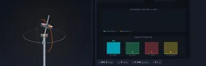
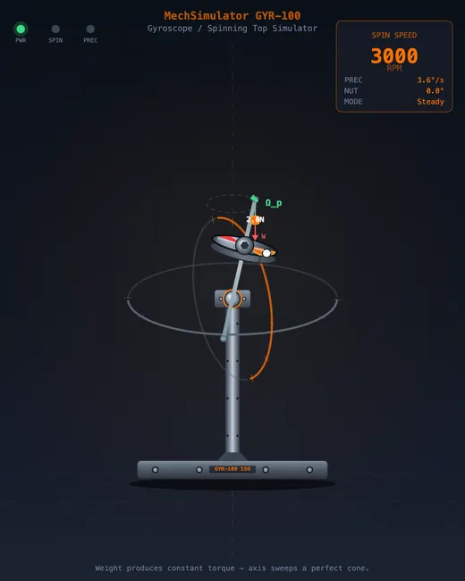
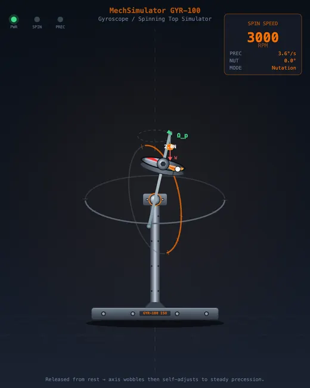

Gyroscope Simulator
Precession & Nutation • Angular Momentum • Gyroscopic Stability — Simulate • Explore • Practice • Quiz
3D Model — Gyroscope Simulator
Interactive 3D model of this apparatus. Pick a component on the right, then drag to rotate · scroll to zoom · right-drag to pan.
Display Controls
Σ Live equations — values substituted from current state
💡 What-if coach — insights from current parameters
| # | Question | Result |
|---|
1 Overview
This free gyroscope simulator lets you visualise precession, nutation, and angular momentum in an interactive canvas environment. The tool models a spinning disc on an axle, calculating real-time rotational dynamics including angular momentum L = Iω, gravitational torque τ = mgd·sinθ, precession rate ωp = τ/L, nutation frequency, kinetic energy, and the gyroscopic couple.
Designed for mechanical and aerospace engineering students, this simulator covers the core concepts of rotational dynamics that underpin inertial navigation, satellite attitude control, and anti-roll stabilisation. Four configurations — free spin, steady precession, nutation oscillation, and forced precession — let you explore the full range of gyroscopic effects.
2 Setting the Scene

The simulator opens in Simulate mode showing a dual-canvas layout: the left canvas displays the gyroscope mechanism with the spin axis, disc, and angular momentum vector; the right canvas plots graphs of angular momentum and precession rate over time. Badge readouts show spin speed, precession rate, angular momentum, and torque.
Below the canvases, the controls panel has sliders for disc mass, disc radius, spin speed (RPM), applied weight, and weight distance. Configuration tabs let you select different operating modes. Eight readout cards display Angular Momentum, Spin Speed, Precession Rate, Nutation Frequency, Torque, Moment of Inertia, Kinetic Energy, and Gyroscopic Couple.
3 Running the Demo
Select a configuration using the Config tabs. Each configuration demonstrates a different gyroscopic phenomenon.
Free Spin: The disc spins freely without external torque. Angular momentum is constant and the spin axis remains fixed — demonstrating gyroscopic rigidity.
Steady Precession: An applied weight creates gravitational torque on the tilted gyroscope. The spin axis sweeps slowly around the vertical at a constant precession rate. Increase spin speed and watch precession slow down — confirming ωp = τ/L.
Nutation: When the gyroscope is released from rest, a rapid wobble (nutation) is superimposed on the precession. The nutation frequency is visible on the graph as a high-frequency oscillation.
Forced Precession: An external torque forces the precession rate, demonstrating the gyroscopic couple that resists changes to the spin axis orientation.
Press Spin Up to start the disc, Apply Torque to tilt the spin axis, and Reset to return to the starting state.
4 Behind the Physics
Explore mode presents concept cards covering angular momentum, precession, nutation, gyroscopic stability, moment of inertia of a disc (I = ½mr²), torque and its relationship to angular momentum change, and real-world applications. Each card includes the relevant formula, a canvas diagram, and a worked numerical example.
Key relationships covered: L = Iω (angular momentum), τ = dL/dt (Newton’s second law for rotation), and ωp = τ/L·sinθ (precession rate). This mode bridges the gap between the visual simulation and the mathematical framework.
5 Try a Problem
Practice mode generates random gyroscope problems: calculate angular momentum for given mass, radius, and RPM; find the precession rate for a given torque and spin speed; determine moment of inertia for a disc; or compute the gyroscopic couple in a turning vehicle. Step-by-step solutions are shown for incorrect answers.
Quiz mode presents 5 randomised questions per session covering precession, nutation, angular momentum conservation, and real-world gyroscope applications. Your score and per-question breakdown are shown at the end.
6 Things to Notice
- Double the spin speed and observe the precession rate halve — confirming the inverse relationship ωp = τ/(Iω).
- Increase the applied weight to see how greater torque accelerates precession.
- Compare Free Spin and Steady Precession to understand how external torque changes the motion from pure spin to precession.
- Watch the nutation decay in the Nutation configuration — friction gradually damps the wobble, leaving only steady precession.
- Check the Kinetic Energy readout to see how much energy is stored in the spinning disc — it scales with ω².
- The dual-canvas layout works best on desktop or tablet in landscape mode.
What is a Gyroscope and How Does It Work?

A gyroscope is a spinning body that exhibits remarkable stability due to its angular momentum. When a disc or wheel spins at high speed, it resists changes to its orientation — a property known as gyroscopic rigidity. This principle is fundamental to navigation systems, stabilization platforms, and attitude control in spacecraft. This virtual gyroscope simulator lets you experiment with 4 different configurations to understand precession, nutation, and gyroscopic stability.
The simulator calculates real-time rotational dynamics including angular momentum (L = Iω), gravitational torque (τ = mgd sinθ), precession rate (ωp = τ/L), and kinetic energy. Animated 3D visualization shows how the spin axis traces a cone during precession and exhibits wobbling during nutation.
Precession and Nutation
When a spinning gyroscope is tilted from vertical, gravity creates a torque that causes the spin axis to sweep around the vertical in a slow circular motion called precession. The precession rate is inversely proportional to the spin speed — faster spinning means slower precession. Superimposed on this steady precession is a rapid wobble called nutation, which occurs when the gyroscope is released from rest.

Applications of Gyroscopes
Gyroscopes are used extensively in inertial navigation systems for aircraft and submarines, attitude determination and control systems (ADCS) for satellites, anti-roll stabilization on ships, and even in smartphones for orientation sensing. This simulator is designed for mechanical engineering and aerospace engineering students to build intuition about rotational dynamics and angular momentum conservation.
The Counter-Intuitive Bit — Why Does a Spinning Top Not Fall?
The intuition most people start with is wrong, and it is worth saying out loud: a fast-spinning top does not stay up because spinning “creates lift.” It stays up because gravity’s torque is perpendicular to its angular momentum. By Newton’s second law in rotational form,
dL/dt = τ
so a torque that is sideways to L produces a sideways change in L — the tip of the angular-momentum vector swings around in a circle rather than collapsing downward. That horizontal sweep is precession. When the spin slows enough that gravity’s torque becomes large compared to L, this clean perpendicular geometry breaks down, the top starts to tilt, the precession circle widens, and you watch the top finally fall over. The simulator’s 3D view lets you slow spin to about 5 rad/s to see this transition happen.
Worked Example — Precession Rate of a Bicycle Wheel
Take the classic lecture-demo bicycle wheel held by one end of its axle:
- Mass m = 2.0 kg, hoop-like (most mass at the rim), radius r = 0.30 m
- Moment of inertia I ≈ m·r² = 2.0 × 0.30² = 0.18 kg·m²
- Spin rate ωs = 30 rad/s (~290 rpm, a hard hand-spin)
- Distance from pivot to wheel centre d = 0.20 m, axle horizontal so sinθ = 1
- g = 9.81 m/s²
L = I·ωs = 0.18 × 30 = 5.4 kg·m²/s
τ = m·g·d = 2.0 × 9.81 × 0.20 = 3.92 N·m
ωp = τ/L = 3.92 / 5.4 = 0.73 rad/s (one full precession every 8.6 s)
Two predictions you can verify with the simulator: (1) doubling the spin rate halves ωp (the wheel precesses more slowly when spun faster — opposite to most students’ first guess); (2) shifting the support point closer to the wheel centre (smaller d) reduces gravity’s torque and also slows precession. Both come straight from ωp = τ/L.
Three Real Gyroscopes — Same Physics, Different Hardware
| Type | How it senses or stabilises | Where used |
|---|---|---|
| Spinning rotor (mechanical) gyro | Massive disc spins at 24,000 rpm; gimbal resists reorientation | Aircraft attitude indicator (artificial horizon); WWII-era torpedoes |
| Ring laser gyro (RLG) | Two counter-rotating laser beams; Sagnac frequency shift indicates rotation | Commercial airliner inertial navigation; modern military aircraft |
| Fibre-optic gyro (FOG) | Same Sagnac principle in a coil of fibre; no moving parts | Marine navigation; satellite ADCS; high-end UAVs |
| MEMS gyro | A vibrating microstructure shifts under Coriolis force during rotation | Smartphones, drones, gaming controllers, ESP in cars |
| Reaction / control-moment gyro | Doesn’t sense — uses stored angular momentum to change attitude | ISS, Hubble Space Telescope, most modern satellites |
Sagnac-based optical gyros (RLG and FOG) now dominate aviation because they have no mechanical wear, start instantly, and survive shock loads that destroy spinning-mass gyros. A typical airliner carries three RLGs and three accelerometers in an Inertial Reference Unit; their drift is corrected periodically by GPS.
Gimbal Lock — The Failure Mode That Ended Mechanical Gyros
A mechanical gyro lives inside a set of nested gimbal rings that let the rotor maintain its orientation in space while the vehicle rotates around it. Gimbal lock happens when two of the three gimbal axes line up — the rotor loses a degree of freedom and the instrument is briefly blind to one axis of rotation. This is not a manufacturing defect; it is a topological inevitability of any three-axis gimbal set.
Famous example: during Apollo 13, NASA engineers had to plan manoeuvres carefully to avoid the inertial measurement unit’s “gimbal lock” cone. Modern systems sidestep the problem in two ways — ring-laser gyros have no gimbals at all (they measure rotation directly through the Sagnac effect), and software-based attitude representations use quaternions instead of three Euler angles to avoid the mathematical singularity that mirrors physical gimbal lock.
Selected References
- Goldstein, H., Poole, C. P. & Safko, J. — Classical Mechanics, 3rd ed., Chapter 5 (The Rigid Body Equations of Motion).
- Lawrence, A. — Modern Inertial Technology: Navigation, Guidance, and Control, 2nd ed., Springer.
- IEEE Std 952-2020 — IEEE Standard Specification Format Guide and Test Procedure for Single-Axis Interferometric Fiber Optic Gyros.
- Macek & Davis — Rotation Rate Sensing with Travelling-Wave Ring Lasers, Applied Physics Letters, 1963 (the original Sagnac-effect gyro paper).
Explore Related Simulators
If you found this Gyroscope simulator helpful, explore our Simple Harmonic Motion simulator, Vibrations simulator, and Newton’s Laws simulator for more hands-on practice.